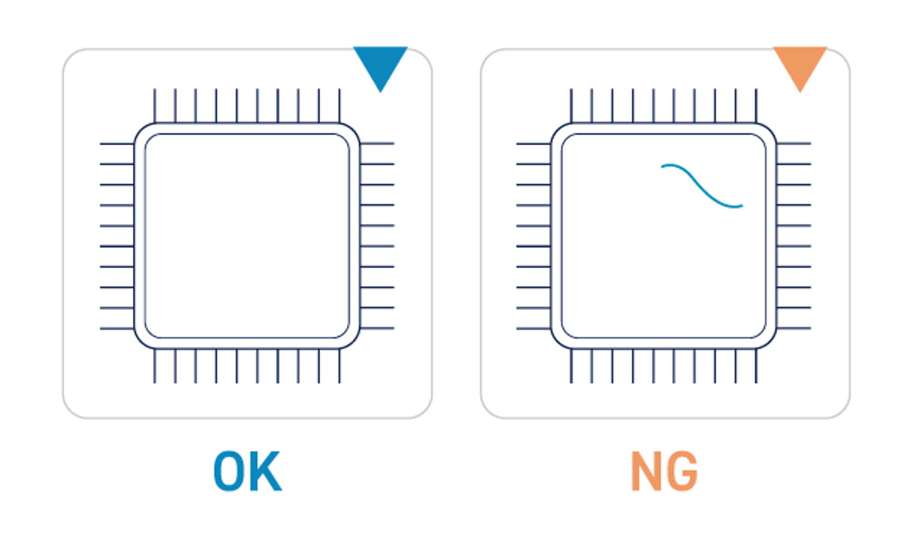
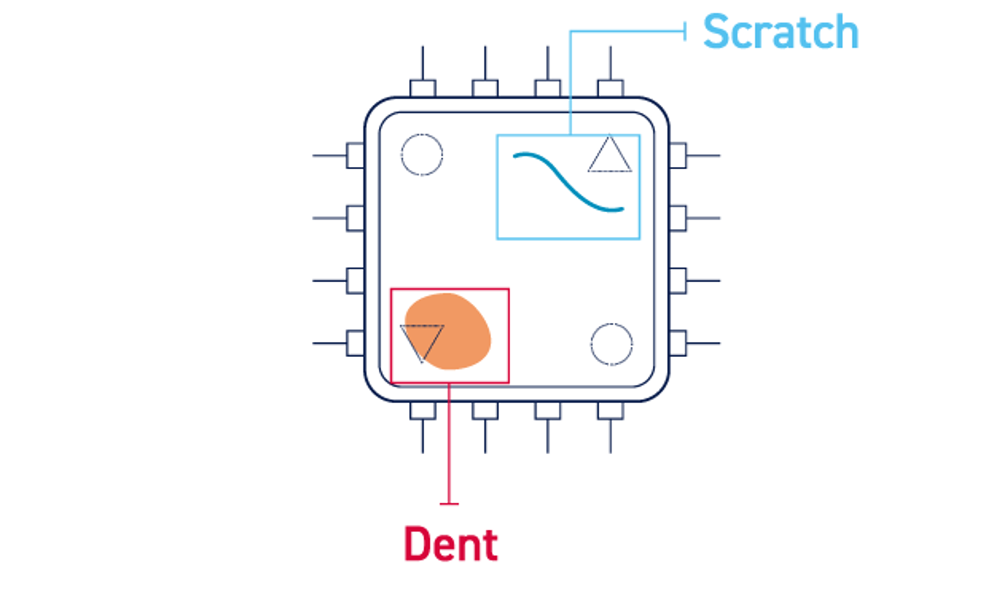
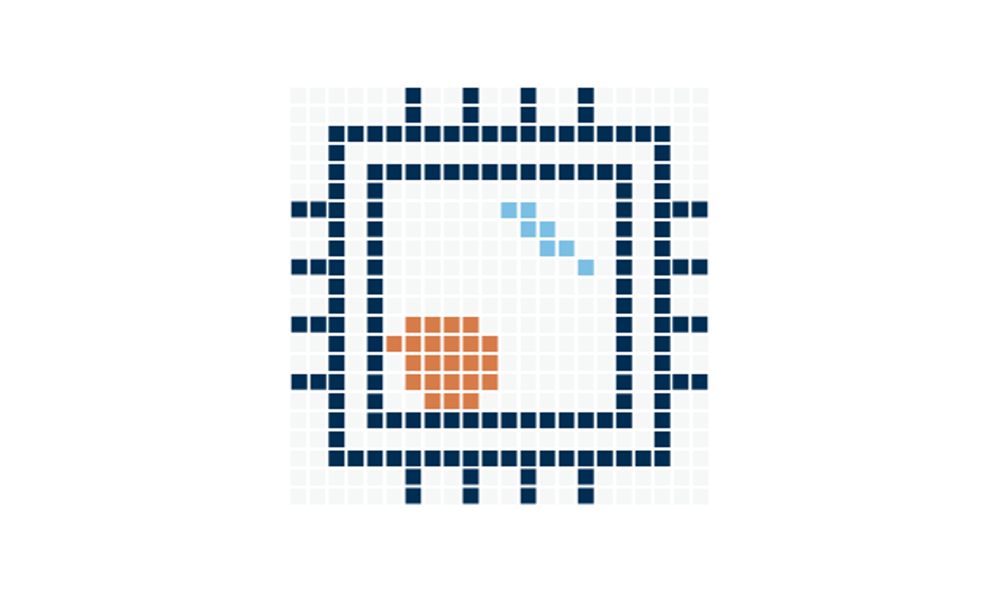
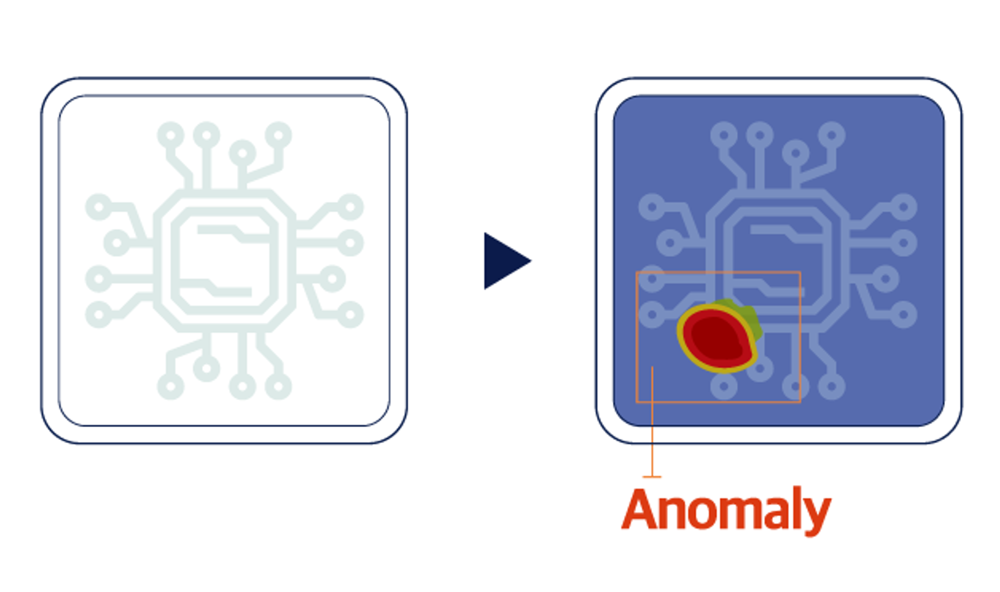
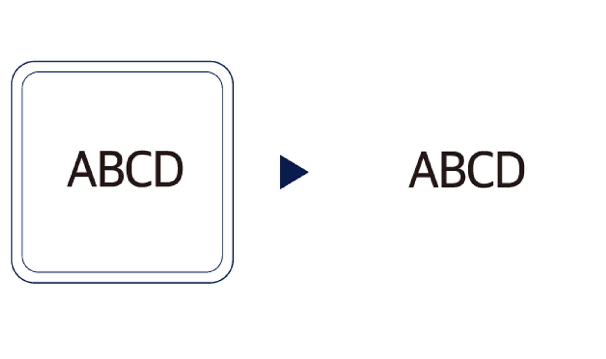
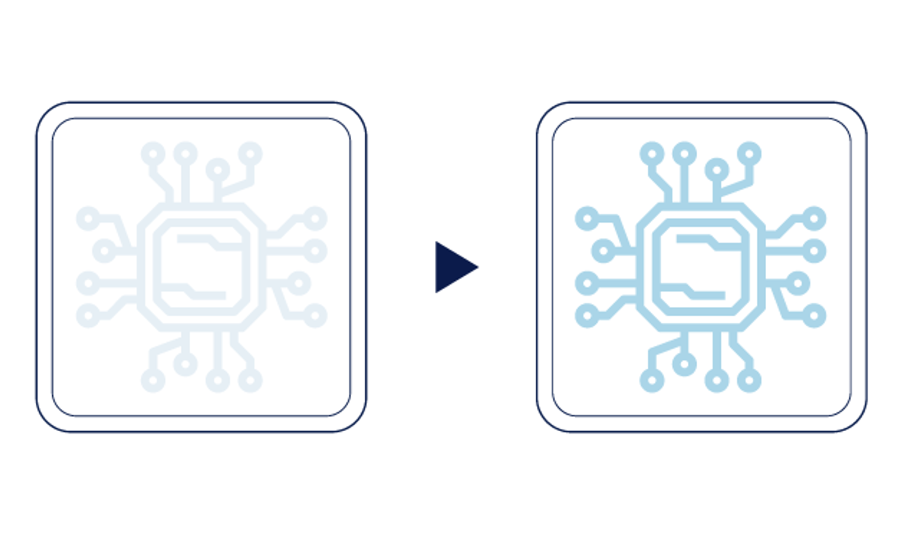

SaigeVision® 개요
SaigeVision® Runtime C# SDK는 실시간 비전 검사용 SDK입니다.
SaigeVision® 딥러닝 추론 엔진을 C#에서 쉽게 사용할 수 있도록 개발되었습니다.
SaigeVision®의 특징
- 딥러닝 비전문가도 쉽게 사용할 수 있습니다.
- 비전 검사 성능이 뛰어납니다.
- 비전 검사 속도가 빠릅니다.
- 다양한 비전 검사 시나리오를 지원합니다.
SaigeVision®의 기능

Classification사용자가 정한 기준에 맞춰 이미지를 유형별로 분류합니다. |

Detection이미지 상의 물체 또는 결함을 박스 형태로 검출합니다. |

Segmentation결함의 정확한 위치를 픽셀 단위로 검출합니다. |

Image Anomaly Detection정상 이미지만으로 학습하여 정상과 다른 이미지 검출합니다. |

Advanced OCR정상 이미지만으로 학습하여 정상과 다른 이미지 검출합니다. |

Image Enhancement저화질 이미지를 고화질 이미지로 개선합니다. |
| 기능 | 설명 |
|---|---|
| Classification | 이미지가 정상인지 불량인지, 그리고 불량이라면 어떤 종류의 불량인지 판별합니다 |
| Detection | 이미지 내에 찾고자 하는 불량 영역을 직사각형으로 검출합니다. 검출된 영역이 어떤 종류의 불량인지도 판별합니다. |
| Segmentation | 이미지 내에 찾고자 하는 불량 영역을 픽셀 단위로 검출합니다. 검출된 영역이 어떤 종류의 불량인지도 판별됩니다. |
| IAD (Image Anomaly Detection) |
이미지가 정상인지 불량인지 판정하고, 이미지 내의 불량 영역을 픽셀 단위로 검출합니다. 정상 이미지만으로 학습이 가능하다는 장점이 있지만, 어떤 종류의 불량인지를 판별할 수는 없습니다. |
| OCR (Optical Character Recognition) |
이미지 내에 찾고자 하는 문자열의 위치를 파악하고, 문자열이 어떤 글자로 이루어져 있는지 인식합니다. |
| IEN (Image Enhencement) |
이미지의 화질을 개선합니다 |